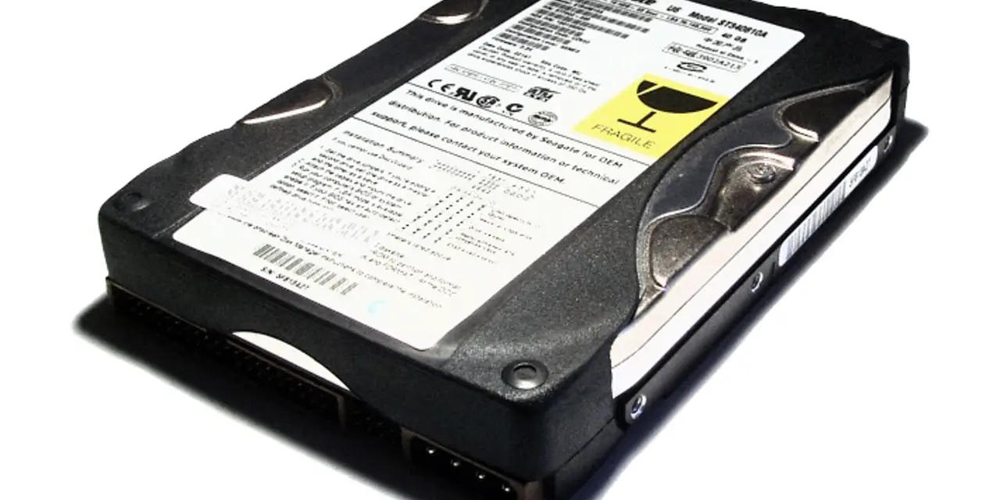

씨게이트를 낡은 하드디스크 회사로만 보면 지금 시장의 질문을 놓칩니다. AI 데이터센터는 빠른 연산만 필요로 하지 않습니다. 모델 학습에 쓴 데이터, 추론 로그, 백업, 규제 보관 데이터가 계속 쌓입니다. 이 모든 데이터를 비싼 SSD에만 담을 수는 없습니다. 차가운 데이터는 여전히 HDD의 경제성을 필요로 합니다.
STX 주주가 궁금해해야 할 질문은 “HDD 수요가 있습니까”가 아닙니다. 수요는 다시 확인되고 있습니다. 중요한 것은 고용량 HDD의 가격이 얼마나 오래 유지되는지, HAMR 전환이 수익성을 높이는지, 그 결과가 배당과 현금흐름을 얼마나 지키는지입니다.
씨게이트의 최근 실적 발표에서 투자자는 매출보다 매출총이익률과 현금흐름을 먼저 봐야 합니다. 공급 부족은 좋은 출발점이지만, 그 부족이 가격과 장기 계약으로 바뀌어야 주주에게 남습니다.
HDD는 낡은 기술이 아니라 차가운 데이터의 창고입니다

HDD 시장은 오랫동안 저성장 산업으로 취급됐습니다. 그러나 AI 데이터의 증가는 저장 계층을 다시 보게 만들었습니다. 빠르게 읽고 쓰는 데이터는 SSD가 맡고, 대량 보관과 백업은 HDD가 맡는 구조가 이어질 수 있습니다. 씨게이트는 이 뒤쪽 예산에서 기회를 봅니다.
고용량 HDD는 단순히 용량만 큰 제품이 아닙니다. 데이터센터 랙 공간, 전력, 냉각, 장애율, 총소유비용을 함께 줄여야 합니다. 고객은 테라바이트당 가격만 보지 않습니다. 드라이브 신뢰성과 납기, 장기 공급 가능성도 봅니다.
씨게이트가 좋은 평가를 받으려면 “HDD가 다시 필요하다”에서 멈추면 안 됩니다. 고용량 제품 믹스가 올라가고, 가격이 유지되고, 현금흐름이 개선되어 배당과 부채 관리가 동시에 가능해야 합니다.
HAMR은 기술 뉴스가 아니라 마진 시험입니다
관련 영상
Seagate EPS Up 115% — But Is the Structural Shift Real?
HAMR 전환은 씨게이트의 중요한 기술 변수입니다. 더 높은 저장 밀도를 제공하면 고객의 총소유비용을 낮출 수 있습니다. 하지만 신기술 전환은 항상 수율과 품질 리스크를 동반합니다. 초기 생산 비용이 높고, 고객 검증이 길어질 수 있습니다.
웨스턴 디지털은 같은 HDD 시장의 가장 중요한 비교 대상입니다. WDC와 STX가 모두 고용량 HDD 가격에 강한 신호를 준다면 구조적 공급 부족에 대한 신뢰가 커집니다. 샌디스크와 마이크론은 플래시와 메모리 쪽에서 저장 인프라의 다른 층을 보여줍니다.
HAMR이 진짜 성공하려면 기술 발표보다 고객 채택과 매출총이익률로 증명되어야 합니다. 더 큰 드라이브를 팔았는데 수율 비용 때문에 마진이 낮다면 주주가 얻는 것은 제한됩니다. 반대로 수율이 안정되고 프리미엄 가격이 붙으면 STX의 이익 구조는 달라질 수 있습니다.
배당주는 현금흐름이 말보다 중요합니다
씨게이트는 배당을 중시하는 투자자에게도 관심을 받습니다. 그러나 배당은 선언보다 현금흐름으로 판단해야 합니다. HDD 사이클이 좋아져도 재고, 설비투자, 부채 상환이 현금을 먼저 가져가면 배당 여력은 제한됩니다.
좋은 사이클에서 회사가 해야 할 일은 명확합니다. 부채 부담을 낮추고, 과도한 증설을 피하고, 고마진 제품 전환을 서두르되 품질을 희생하지 않아야 합니다. 저장장치 업종은 공급 과잉의 기억이 강하기 때문에 자본 discipline이 중요합니다.
클라우드 고객 계약도 핵심입니다. 고객이 장기 용량 확보를 원한다면 매출 가시성은 좋아집니다. 다만 대형 고객은 가격 협상력이 큽니다. 계약 기간이 길어도 가격 조건이 약하면 마진은 제한됩니다.
STX는 구조적 변화와 사이클 착시를 구분해야 합니다
STX의 좋은 시나리오는 AI 저장 수요가 장기 계약으로 이어지고, HAMR 전환이 고용량 제품 믹스를 높이며, 잉여현금흐름이 배당과 부채 관리를 동시에 받치는 경우입니다. 이때 씨게이트는 단순 사이클 기업보다 데이터 인프라 현금흐름 기업으로 평가받을 수 있습니다.
나쁜 시나리오는 고객 주문이 일시적으로 당겨진 뒤 재고 조정에 들어가고, HAMR 수율이 기대보다 늦고, 가격이 다시 하락하는 경우입니다. HDD 업종은 작은 공급 과잉에도 가격이 크게 흔들릴 수 있습니다.
따라서 씨게이트를 볼 때는 니어라인 HDD 출하, 평균판매단가, HAMR 수율, 매출총이익률, 잉여현금흐름, 배당 커버리지, 클라우드 고객 재고를 함께 봐야 합니다. 이 회사의 투자 포인트는 오래된 저장장치가 아니라 AI 시대에도 사라지지 않는 대용량 보관의 경제성입니다.
씨게이트의 강점은 시장이 작아졌기 때문에 오히려 생길 수 있습니다. HDD 공급자가 줄어들고 고객이 고용량 제품을 원하면 가격 협상 환경은 과거보다 나아질 수 있습니다. 하지만 공급자가 적다는 이유만으로 높은 마진이 자동 보장되는 것은 아닙니다. 고객 집중도가 높아지면 구매자 협상력도 커집니다.
HAMR은 장기적으로 씨게이트의 제품 차별화 근거가 될 수 있습니다. 더 큰 용량을 안정적으로 제공하면 고객은 데이터센터 공간과 전력 비용을 줄일 수 있습니다. 그러나 고객은 새 기술을 조심스럽게 도입합니다. 대규모 장애가 나면 저장장치 비용보다 데이터 손실 위험이 훨씬 크기 때문입니다.
배당을 보는 투자자는 사이클을 더 냉정하게 봐야 합니다. 배당수익률이 높아 보여도 현금흐름이 흔들리면 주가는 배당보다 먼저 반응합니다. STX는 좋은 업황에서 부채를 낮추고 현금 완충력을 키워야 다음 하강기를 버틸 수 있습니다.
AI 데이터센터 수요가 HDD에 주는 효과도 계층적으로 봐야 합니다. 실시간 추론과 학습에는 빠른 저장장치가 필요하지만, 백업과 로그, 원천 데이터 보관에는 비용 효율이 중요합니다. 씨게이트는 이 후자 영역에서 장기 수요를 얻을 수 있습니다.
그래서 씨게이트의 다음 확인표는 분명합니다. 니어라인 HDD 출하, HAMR 고객 채택, 평균판매단가, 매출총이익률, 재고, 잉여현금흐름, 부채, 배당 커버리지입니다. 이 표가 안정되면 HDD 공급 부족은 단순한 사이클이 아니라 구조적 변화로 인정받을 수 있습니다.